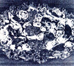
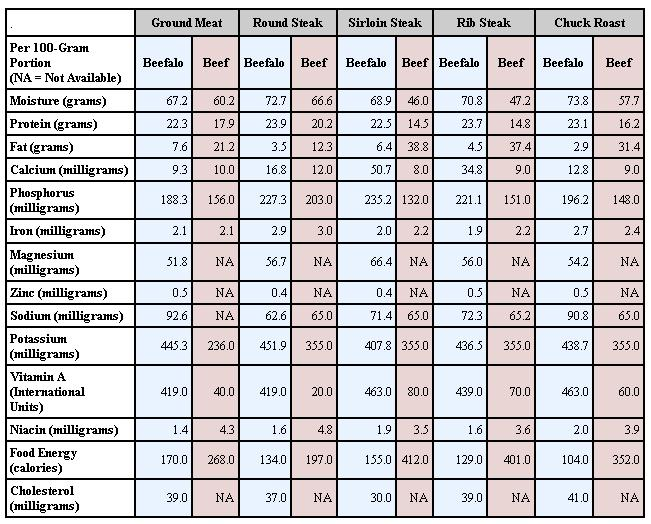

Are you disgusted when you cook ground beef and discover that it's half fat? Does your temper flare when your eagerly anticipated, expensive steak is so tough you ham to attack it with a sharpened knife and tensed muscles to saw the meat into chewable pieces? If so, you should try eating beefalo!
In addition to being more flavorful and tender than beef, this "new" food is actually more nutritious, too! Take a look at the accompanying chart to see just how much more food value is contained in a cut of beefalo than in the meat of more common cattle!
It doesn't take a specialist to analyze the dramatic differences between the two types of meat and conclude that beefalo is indeed superior nutritionally. Also, its higher protein level-and the fact that "half beef" is very low in cholesterol - makes it possible to satisfy protein requirements while eating less meat and-at the same timereduce saturated fat intake and gain extra calcium, phosphorus, potassium, and vitamin A.
What about flavor? For the past three years, we've sold custom-slaughtered beefalo to numerous families for their home freezers, and the response has been overwhelmingly favorable. Every customer has been completely satisfied ... and amazed at the full-bodied taste of bovine-bison when compared to commercially available red meat.
I can add the praise of my own family, too: After having beefalo on the table, we find it difficult to accept any other form of beef. A quarter-pound of ground beefalo, for example, makes a large patty (dubbed a "beefalo burger" by my children) which remains the same size when it's cooked ... and bison-cross steaks are lean and juicy. Moreover, with less fat to insulate it, a four-pound roast reaches the medium-rare stage in one hour at 350°F This quicker cooking prevents the natural juices from evaporating, and the added moisture accentuates the tenderness of the short-mined meat.
It's hard to believe that anything so healthful can taste so good!
Beefalo test results are from analysis No. 568,531-35 performed by the Mississippi State Chemical Laboratory (James P. Minyard, Jr., State Chemist), May 30,1978. Beef test results am from the U.S.D.A. Handbook No 8, published by the United States Department of Agriculture, Consumer and Food Economics Institute.
|
 |
 |
|